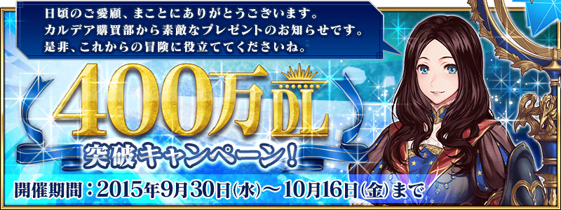
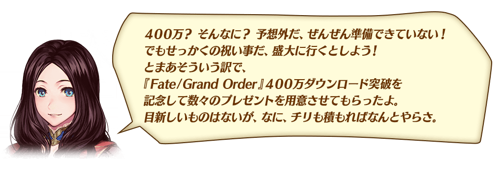
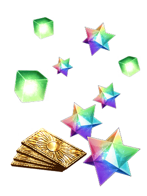
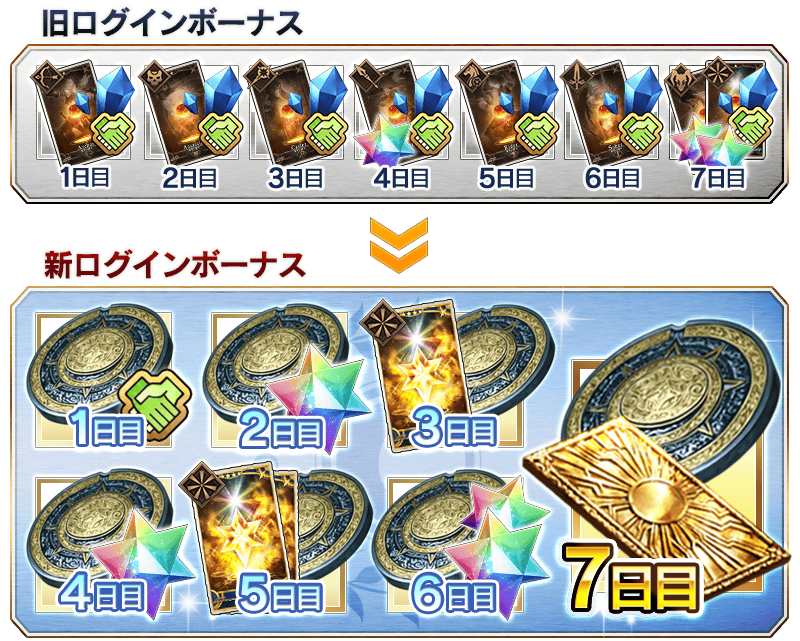
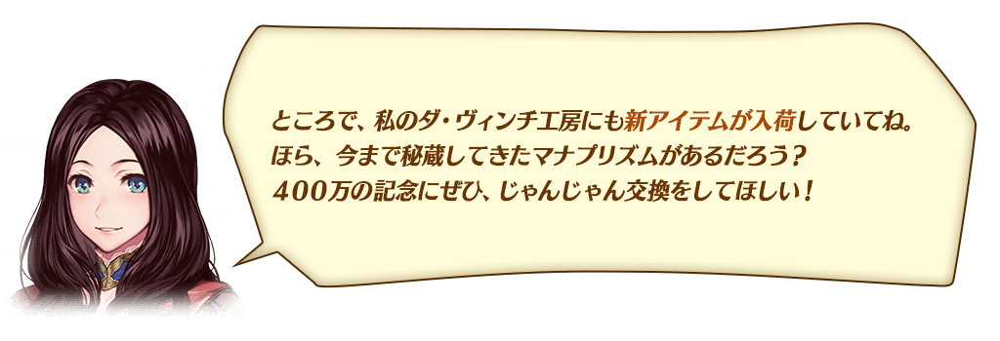
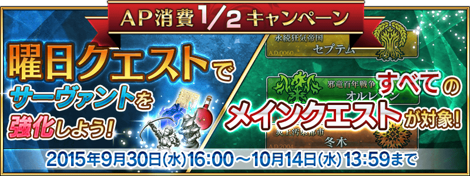
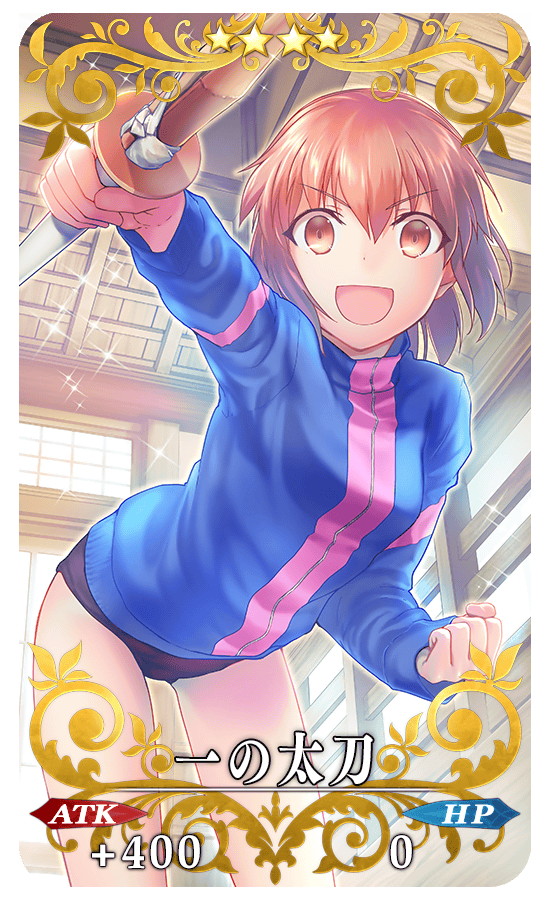
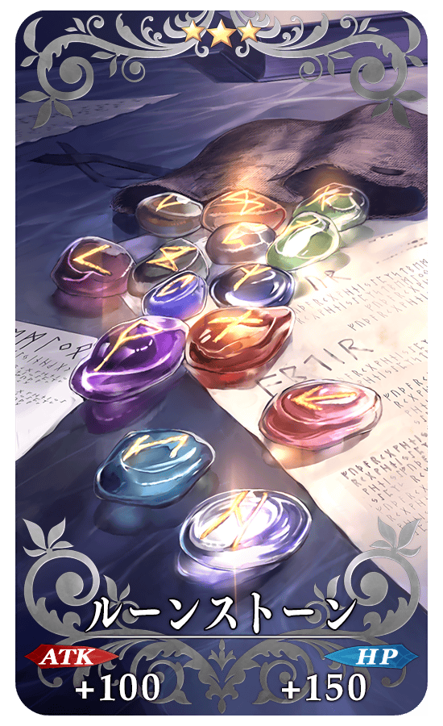

<!DOCTYPE html PUBLIC "-//W3C//DTD XHTML 1.0 Transitional//EN" "http://www.w3.org/TR/xhtml1/DTD/xhtml1-transitional.dtd">
<html xmlns="http://www.w3.org/1999/xhtml">
<head>
<meta http-equiv="Content-Type" content="text/html; charset=utf-8" />
<meta name="description" content="Fate/Grand Order台灣中文資料站" />
<meta name="keywords" content="Fate/Grand Order,FGO,Fate/GO,TYPE-MOON,Fate,Saber,Archer,Lancer,Rider,Caster,Assassin,Berserker,Shielder,Ruler" />
<title>「400萬DL突破宣傳活動！」</title>
<link rel="icon" href="favicon.ico" type="image/vnd.microsoft.icon">
<link href="common/css/common.css" rel="stylesheet" type="text/css" />
<link href="common/css/detail_info.css" rel="stylesheet" type="text/css" />
<link href="common/css/sidebar.css" rel="stylesheet" type="text/css" />
<script type="text/javascript" src="common/js/jquery.min.js"></script>
<script type="text/javascript" src="common/js/sidebar.js"></script>
<script type="text/javascript" src="common/js/smoothRollOver.js"></script>
<script type="text/javascript" src="common/js/scrollTop.js"></script>
<script>
  (function(i,s,o,g,r,a,m){i['GoogleAnalyticsObject']=r;i[r]=i[r]||function(){
  (i[r].q=i[r].q||[]).push(arguments)},i[r].l=1*new Date();a=s.createElement(o),
  m=s.getElementsByTagName(o)[0];a.async=1;a.src=g;m.parentNode.insertBefore(a,m)
  })(window,document,'script','//www.google-analytics.com/analytics.js','ga');

  ga('create', 'UA-70142247-1', 'auto');
  ga('require', 'linkid');
  ga('require', 'displayfeatures');
  ga('send', 'pageview');
</script>
</head>
<body onload="loadsidebar();">
<!--二欄橫幅主要區塊開始-->
<div style='position:relative;'>
    <!--選單區塊開始-->
    <div id="div_right_sidebar"></div>
    <!--選單區塊結束-->
    <!--主要內容區塊開始-->
    <div id="div_content"><div class="container">
<article class="content textsize" style="width:840px">
	<p class="textsize">
	
    
    <br>
    
    <br>
    
    <p><strong>　<font color="#094a98">◆</font>キャンペーン開催期間<font color="#094a98">◆</font></strong><br>　　2015年9月30日（水）16：00～10月16日（金）3：59まで</p>
    
    <p><strong>　<font color="#094a98">◆</font>キャンペーン対象者<font color="#094a98">◆</font></strong><br>　　上記期間にFate/Grand Orderを遊んでいる方</p>
    
    
    <br><br>
    
    <br>
    
    <p><span style="font-size:1.2em"><strong>　<font color="#094a98">◆</font>400万DL記念　特別ログインボーナス開催！</strong></span><br>
　　下記期間中に、15回ログイン（1日1回カウント）すると最大で聖晶石22個と、呼符（レア召喚1回）を4枚プレゼント！ すべて受け取ると<span class="notice">レア召喚9回分</span>が無料でゲットできます！</p>

	
    <p><strong>　<font color="#094a98">◆</font>特別ログインボーナス対象期間<font color="#094a98">◆</font></strong><br>　　2015年10月1日（木）4：00～10月16日（金）3：59まで<br>
    
	<div class="infotext">
		<span class="notice">
		<div class="att">※1回目のログインボーナスは、10月1日（木）4：00から配布されます。</div>
		<div class="att">※以降のログインボーナスは、AM4：00に配布されます。</div>
		<div class="att">※最大で15回受け取り可能ですが、ゲームを開始したタイミングによっては、この限りではございません。</div></span>
   </div>
    
   <div class="item_left" >
<table width="100%" align="left" style="font-size:0.75em">
	<tbody>
		<tr>
			<th width="20%">ログイン回数</th>
			<th width="40%">プレゼント内容</th>
		</tr>

		<tr>
			<td bgcolor="#ECF2F3"><strong>1回目</strong></td>
			<td bgcolor="#ECF2F3">呼符1枚、マナプリズム10個</td>
		</tr>
        
        <tr>
			<td><strong>2回目</strong></td>
			<td>聖晶石2個、マナプリズム10個</td>
		</tr>

		<tr>
			<td bgcolor="#ECF2F3"><strong>3回目</strong></td>
			<td bgcolor="#ECF2F3">聖晶石2個、マナプリズム10個</td>
		</tr>
        
        <tr>
			<td><strong>4回目</strong></td>
			<td>聖晶石2個、マナプリズム10個</td>
		</tr>
        
		<tr>
			<td bgcolor="#ECF2F3"><strong>5回目</strong></td>
			<td bgcolor="#ECF2F3">呼符1枚、マナプリズム10個</td>
		</tr>
        
        <tr>
			<td><strong>6回目</strong></td>
			<td>聖晶石2個、マナプリズム10個</td>
		</tr>
        
		<tr>
			<td bgcolor="#ECF2F3"><strong>7回目</strong></td>
			<td bgcolor="#ECF2F3">聖晶石2個、マナプリズム10個</td>
		</tr>
        
        <tr>
			<td><strong>8回目</strong></td>
			<td>聖晶石2個、マナプリズム10個</td>
		</tr>
        
		<tr>
			<td bgcolor="#ECF2F3"><strong>9回目</strong></td>
			<td bgcolor="#ECF2F3">呼符1枚、マナプリズム10個</td>
		</tr>
        
        <tr>
			<td><strong>10回目</strong></td>
			<td>聖晶石2個、マナプリズム10個</td>
		</tr>
        
		<tr>
			<td bgcolor="#ECF2F3"><strong>11回目</strong></td>
			<td bgcolor="#ECF2F3">聖晶石2個、マナプリズム10個</td>
		</tr>
        
        <tr>
			<td><strong>12回目</strong></td>
			<td>聖晶石2個、マナプリズム10個</td>
		</tr>
        
		<tr>
			<td bgcolor="#ECF2F3"><strong>13回目</strong></td>
			<td bgcolor="#ECF2F3">呼符1枚、マナプリズム10個</td>
		</tr>
        
        <tr>
			<td><strong>14回目</strong></td>
			<td>聖晶石2個、マナプリズム10個</td>
		</tr>
        
		<tr>
			<td bgcolor="#ECF2F3"><strong>15回目</strong></td>
			<td bgcolor="#ECF2F3">聖晶石2個、マナプリズム10個</td>
		</tr>
        
        
	</tbody>
</table></div>

	<div class="item_right"></div>


	<div style="clear:both""></div>
    
    <br>

	<br>
    
    <p><span style="font-size:1.2em"><strong>　<font color="#094a98">◆</font>連続ログインボーナスを大幅リニューアル！</strong></span><br>
　　7日間で、最大<span class="notice">レア召喚2回分</span>を無料でプレゼント！さらに「英雄の証」や「経験値カードALL★4（SR）」もゲットできるようになります！<br>
<br>
	　　<span class="notice">※10月1日（木）4：00からのログインボーナスが対象となります。</span></p>
        
        <br><br>
        
        
<table width="100%" align="center" style="font-size:0.75em">
	<tbody>
		<tr>
			<th width="20%">ログイン日数</th>
			<th width="35%">新ログインボーナス</th>
            <th width="45%">旧ログインボーナス</th>
		</tr>

		<tr>
			<td bgcolor="#ECF2F3" class="right"><strong>1日目</strong></td>
			<td bgcolor="#ECF2F3">英雄の証　1個<br>フレンドポイント　2,000pt</td>
            <td bgcolor="#ECF2F3">フレンドポイント400pt<br>QP3,000<br>★1経験値カード（アーチャー）1枚</td>
		</tr>
        
        <tr>
			<td class="right"><strong>2日目</strong></td>
			<td>英雄の証　1個<br>聖晶石　1個</td>
            <td>フレンドポイント400pt<br>QP3,000<br>★1経験値カード（アサシン）1枚</td>
		</tr>
        
        		<tr>
			<td bgcolor="#ECF2F3" class="right"><strong>3日目</strong></td>
			<td bgcolor="#ECF2F3">英雄の証　1個<br>経験値カードALL★4（SR）1枚</td>
            <td bgcolor="#ECF2F3">フレンドポイント400pt<br>QP3,000<br>★1経験値カード（キャスター）1枚</td>
		</tr>
        
        <tr>
			<td class="right"><strong>4日目</strong></td>
			<td>英雄の証　1個<br>聖晶石　1個</td>
            <td>フレンドポイント400pt<br>QP3,000<br>★1経験値カード（ランサー）1枚<br>聖晶石1個</td>
		</tr>
        
        		<tr>
			<td bgcolor="#ECF2F3" class="right"><strong>5日目</strong></td>
			<td bgcolor="#ECF2F3">英雄の証　1個<br>経験値カードALL★4（SR）2枚</td>
            <td bgcolor="#ECF2F3">フレンドポイント400pt<br>QP3,000<br>★1経験値カード（ライダー）1枚</td>
		</tr>
        
        <tr>
			<td class="right"><strong>6日目</strong></td>
			<td>英雄の証　1個<br>聖晶石　2個</td>
            <td>フレンドポイント400pt<br>QP3,000<br>★1経験値カード（セイバー）1枚</td>
		</tr>
        
        		<tr>
			<td bgcolor="#ECF2F3" class="right"><strong>7日目</strong></td>
			<td bgcolor="#ECF2F3">英雄の証　1個<br>呼符　1枚</td>
            <td bgcolor="#ECF2F3">フレンドポイント400pt<br>QP3,000<br>★1経験値カード（バーサーカー）1枚<br>聖晶石2個</td>
		</tr>
        
	</tbody>
</table><br>

		<br>
    
    <p><span style="font-size:1.2em"><strong>　<font color="#094a98">◆</font>通算ログインボーナス75日目以降を大幅に増加！</strong></span><br>　　長期間遊んでいただくマスターのみなさまに朗報です！<br>
　　すでに実装されている通算ログインボーナスの７５日目以降のプレゼントを大幅に増加いたしました！</p>
        
                
<table width="100%" align="center" style="font-size:0.75em">
	<tbody>
		<tr>
			<th width="40%">通算ログイン日数</th>
			<th width="30%">アイテム</th>
            <th width="30%">個数</th>
		</tr>

		<tr>
			<td bgcolor="#ECF2F3" class="right"><strong>10日目</strong></td>
			<td bgcolor="#ECF2F3">聖晶石</td>
            <td bgcolor="#ECF2F3" class="right">4個</td>
		</tr>
        
        <tr>
			<td class="right"><strong>20日目</strong></td>
			<td>聖晶石</td>
            <td class="right">4個</td>
		</tr>
        
		<tr>
			<td bgcolor="#ECF2F3" class="right"><strong>30日目</strong></td>
			<td bgcolor="#ECF2F3">聖晶石</td>
            <td bgcolor="#ECF2F3" class="right">4個</td>
		</tr>
        
        <tr>
			<td class="right"><strong>40日目</strong></td>
			<td>聖晶石</td>
            <td class="right">4個</td>
		</tr>
        
        		<tr>
			<td bgcolor="#ECF2F3" class="right"><strong>50日目</strong></td>
			<td bgcolor="#ECF2F3">聖晶石</td>
            <td bgcolor="#ECF2F3" class="right">4個</td>
		</tr>
        
        <tr>
			<td class="right"><span class="notice"><strong>75日目</strong></span></td>
			<td>聖晶石</td>
            <td class="right">10個</td>
		</tr>
        
        		<tr>
			<td bgcolor="#ECF2F3" class="right"><span class="notice"><strong>100日目</strong></span></td>
			<td bgcolor="#ECF2F3">聖晶石</td>
            <td bgcolor="#ECF2F3" class="right">20個</td>
		</tr>
        
        <tr>
			<td class="right"><span class="notice"><strong>その後、50日ごとに</strong></span></td>
			<td>聖晶石</td>
            <td class="right">20個</td>
		</tr>
        
	</tbody>
</table><br>

		<br>
    
    <p><span style="font-size:1.2em"><strong>　<font color="#094a98">◆</font>スタートダッシュキャンペーンも継続中！</strong></span><br>　　最大で40個の聖晶石（<span class="notice">レア召喚10回分</span>）がプレゼントでもらえます！この機会にFate/Grand Orderを遊んでみてください。<br><br>
　　1.ログインボーナス（ゲームをダウンロードし、合計7日間ログインする事で取得）<br>　 　1日目…1個、2日目…2個、3日目…3個、4日目…4個、5日目…5個、6日目…6個、7日目…7個（ログインボーナス合計：28個）<br>
　　2.クエストクリア<br> 　　チュートリアルクリアで2個、序章クリアで10個（クエストクリア合計：12個）

</p>
        
        
		
	<br>
    
    <br>
    
    <p><span style="font-size:1.2em"><strong>　<font color="#094a98">◆</font>ダ・ヴィンチ工房に新アイテム追加</strong></span><br>　　マナプリズムで交換可能なアイテムが追加されます！</p>
    
    <p>　　追加の新アイテムについては、9月30日（水）16：00に更新されるダ・ヴィンチ工房をお楽しみに！</p><br>
<br>

    
	<br><br>
    
    <br>
    
    <p><span style="font-size:1.2em"><strong>　<font color="#094a98">◆</font>曜日クエスト（霊基再臨、スキル強化）のAP消費1/2</strong></span><br>　　期間限定で、以下の曜日クエストのAP消費が1/2になります。</p>
    
    <p><strong>　<font color="#094a98">◆</font>AP消費1/2期間<font color="#094a98">◆</font></strong><br>　　2015年9月30日（水）16：00～10月14日（水）13：59まで</p>
    
    
                    
<table width="100%" align="center" style="font-size:0.75em">
	<tbody>
		<tr>
			<th width="10%">曜日</th>
			<th width="25%">クエスト名</th>
            <th width="65%">報酬</th>
		</tr>

		<tr>
			<td bgcolor="#ECF2F3" class="right"><strong>火</strong></td>
			<td bgcolor="#ECF2F3">三騎士と対決</td>
            <td bgcolor="#ECF2F3">セイバー、ランサー、アーチャーの霊基再臨用アイテム</td>
		</tr>
        
        <tr>
			<td class="right"><strong>水</strong></td>
			<td>四騎と対決</td>
            <td>ライダー、キャスター、アサシン、バーサーカーの霊基再臨用アイテム</td>
		</tr>
        
        		<tr>
			<td bgcolor="#ECF2F3" class="right"><strong>木</strong></td>
			<td bgcolor="#ECF2F3">モンスター狩り<br>＜三騎士編＞</td>
            <td bgcolor="#ECF2F3">セイバー、ランサー、アーチャーのスキル強化用アイテム</td>
		</tr>
        
        <tr>
			<td class="right"><strong>金</strong></td>
			<td>モンスター狩り<br>＜四騎編＞</td>
            <td>ライダー、キャスター、アサシン、バーサーカーのスキル強化用アイテム</td>
		</tr>
        
        
        

	</tbody>
</table><br>
     
     <p><span style="font-size:1.2em"><strong>　<font color="#094a98">◆</font>メインクエストのAP消費1/2</strong></span><br>　　期間限定で、すべてのメインクエストのAP消費が1/2になります。<br>
　　この機会に、メインクエストを進めましょう！</p>
    
    <p><strong>　<font color="#094a98">◆</font>AP消費1/2期間<font color="#094a98">◆</font></strong><br>　　2015年9月30日（水）16：00～10月14日（水）13：59まで</p>
    <p><strong>　<font color="#094a98">◆</font>対象<font color="#094a98">◆</font></strong><br>　　序章、オルレアン、セプテムのすべてのメインクエスト<br>
     
	　　<span class="notice">※序章、オルレアン、セプテム内の、フリークエスト、幕間の物語は対象外です</span></p><br>
    
    
    <br>
    
    <p><span style="font-size:1.2em"><strong>　<font color="#094a98">◆</font>上級のAP消費をすべて30に変更いたします！</strong></span><br>　　曜日クエスト上級のAP消費が40だったものをすべて30に変更いたします。</p>
    
    <p><span style="font-size:1.2em"><strong>　<font color="#094a98">◆</font>一部の曜日クエストに超級が登場！</strong></span><br>　　一部の曜日クエストに超級（AP消費40）が追加になります。</p>
    
    <p><strong>　<font color="#094a98">◆</font>曜日クエストリニューアル開始日<font color="#094a98">◆</font></strong><br>　　2015年9月30日（水）16：00～</p>
    <p><strong>　<font color="#094a98">◆</font>超級登場の対象クエスト<font color="#094a98">◆</font></strong><br>　　月：種火集め＜三騎士編＞<br>
　　火：種火集め＜四騎編＞<br>
　　木：種火集め＜三騎士編＞<br>
　　金：種火集め＜四騎編＞<br>
　　土：種火集め＜オール編＞<br>
</p>
    
    
    <br>
    
    <p><span style="font-size:1.2em"><strong>　<font color="#094a98">◆</font>敵サーヴァントから獲得できる経験値カードのレアリティを引き上げ！</strong></span><br>　　各クエストにおいて、サーヴァント、シャドウサーヴァントが落とす経験値カードのレアリティの下限を★1からそれぞれ、サーヴァントは★3以上、シャドウサーヴァントは★2に引き上げます。</p>
    
	<p><strong>　<font color="#094a98">◆</font>開始日<font color="#094a98">◆</font></strong><br>　　2015年9月30日（水）16：00～</p>
    

	<p></p>
    
        
<br>

	<p></p>
    
    <p><strong><font color="#094a98">◆</font>400万DL記念ピックアップ期間<font color="#094a98">◆</font></strong><br>　期間：2015年9月30日(水) 16:00 ～ 10月14日(水) 13:59</p>
   	
    400万DL突破キャンペーンの開催を記念して、期間限定サーヴァント<span class="notice">「★5（SSR）坂田金時」</span>が新登場！<br>
    その他、<span class="notice">新登場の概念礼装3種、ピックアップされた4騎の出現確率がUP！</span><br><br>
    
    <span class="notice">※400万DL記念ピックアップ期間中、アルトリア・ペンドラゴン[オルタ]は序章クリア前でも入手可能です。</span><br><br>
    
    10回召喚では★4（SR）以上1枚確定と★3（R）以上のサーヴァント1騎確定！<br>
	<span class="notice">※★4（SR）以上確定にはサーヴァントと概念礼装が含まれます。</span><br><br><br>

    <strong><h1><font color="#a21b20">◆期間限定サーヴァント◆</font></h1></strong>
    <hr>
    
    <strong><font color="#c0972d">★★★★★SSR</font></strong>　バーサーカー<br>
    <h3><font color="#053976">　坂田金時</font></h3>
    <font color="#ff000c"><strong>　MAX ATK</strong></font> 12712　<font color="#0024ff"><strong>MAX HP</strong></font> 12150<br>
    <strong><font color="#0072ff">　宝具</font>　黄金衝撃</strong>（ゴールデンスパーク）
    <hr><br>
<br>

    
    <strong><h1><font color="#a21b20">◆ピックアップサーヴァント◆</font></h1></strong>
    <hr>
    
    <strong><font color="#c0972d">★★★★SR</font></strong>　セイバー<br>
    <h3><font color="#053976">　アルトリア・ペンドラゴン[オルタ]</font></h3>
    <font color="#ff000c"><strong>　MAX ATK</strong></font> 10248　<font color="#0024ff"><strong>MAX HP</strong></font> 11589<br>
    <strong><font color="#0072ff">　宝具</font>　約束された勝利の剣</strong>（エクスカリバー・モルガン）
    <hr>
    
    <strong><font color="#c0972d">★★★★SR</font></strong>　ライダー<br>
    <h3><font color="#053976">　マルタ</font></h3>
    <font color="#ff000c"><strong>　MAX ATK</strong></font> 8014　<font color="#0024ff"><strong>MAX HP</strong></font> 13068<br>
    <strong><font color="#0072ff">　宝具</font>　愛知らぬ哀しき竜よ</strong>（タラスク）
    <hr>
    
    <strong><font color="#c0972d">★★★R</font></strong>　アーチャー<br>
    <h3><font color="#053976">　ロビンフッド</font></h3>
    <font color="#ff000c"><strong>　MAX ATK</strong></font> 6715　<font color="#0024ff"><strong>MAX HP</strong></font> 10187<br>
    <strong><font color="#0072ff">　宝具</font>　祈りの弓</strong>（イー・バウ）
    <hr>
    
    <strong><font color="#c0972d">★★★R</font></strong>　ライダー<br>
    <h3><font color="#053976">　ブーディカ</font></h3>
    <font color="#ff000c"><strong>　MAX ATK</strong></font> 6289　<font color="#0024ff"><strong>MAX HP</strong></font> 10130<br>
    <strong><font color="#0072ff">　宝具</font>　約束されざる守護の車輪</strong>（チャリオット・オブ・ブディカ）
    <hr>
    <br><br>
    
    
<strong><h1><font color="#a21b20">◆新登場概念礼装◆</font></h1></strong>
<hr>

<div class="pickup_right">
<strong><font color="#c0972d">★★★★★SSR</font></strong><br>
<h3><font color="#053976">　黒の聖杯</font></h3>
<font color="#ff000c"><strong>　ATK</strong></font> 600（最大：2400）　<font color="#0024ff"><strong>HP</strong></font> 0<br>
<strong><font color="#0072ff">　スキル</font>　</strong><br>
　　自身の宝具の威力を60％アップ＆毎ターンHP500減少状態付与【デメリット】
</div>

<div class="pickup_left"></div>


<div style="clear: both;"></div>

<hr>

<div class="pickup_right">
<strong><font color="#c0972d">★★★★SR</font></strong><br>
<h3><font color="#053976">　一の太刀</font></h3>
<font color="#ff000c"><strong>　ATK</strong></font> 400（最大：1500）　<font color="#0024ff"><strong>HP</strong></font> 0<br>
<strong><font color="#0072ff">　スキル</font><br>
　　</strong>自身に必中状態を付与＆自身のQuickカードの性能を8％アップする
</div>

<div class="pickup_left"></div>

<div style="clear: both;"></div>

<hr>

<div class="pickup_right">
<strong><font color="#c0972d">★★★R</font></strong><br>
<h3><font color="#053976">　ルーンストーン</font></h3>
<font color="#ff000c"><strong>　ATK</strong></font> 100（最大：500）　<font color="#0024ff"><strong>HP</strong></font> 150（最大：750）<br>
<strong><font color="#0072ff">　スキル</font><br>
　　</strong>自身の弱体耐性を5％アップ＆スター集中度を100%アップする
</div>

<div class="pickup_left"></div>

<div style="clear: both;"></div>

<hr>
<br><br>
    
    
        
    <br>
    <br>
    
    <br>
    <br>
</article>
</div>
<div id="gotop"><a href="#"></a></div>
    </div>
    <!--主要內容區塊結束-->
</div>
<!--二欄橫幅主要區塊結束-->
</body>
</html>